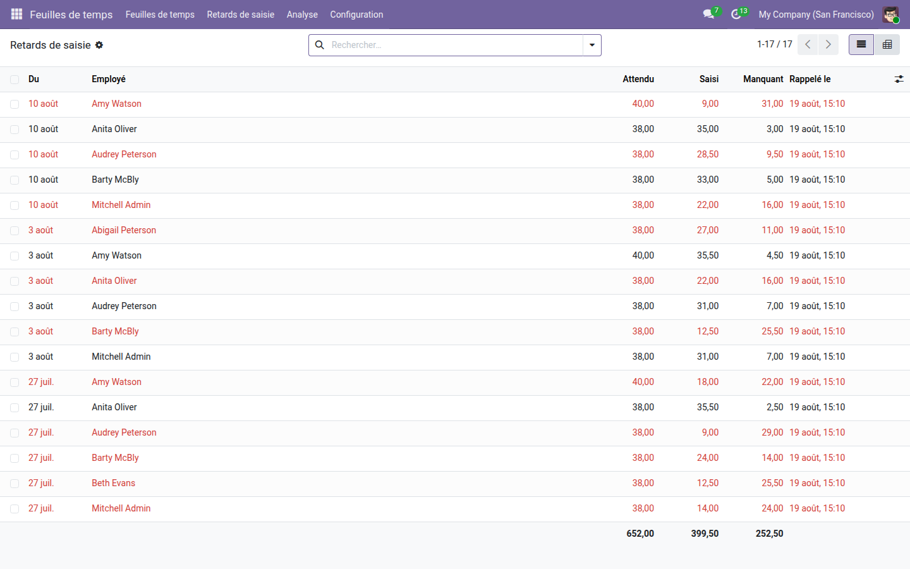
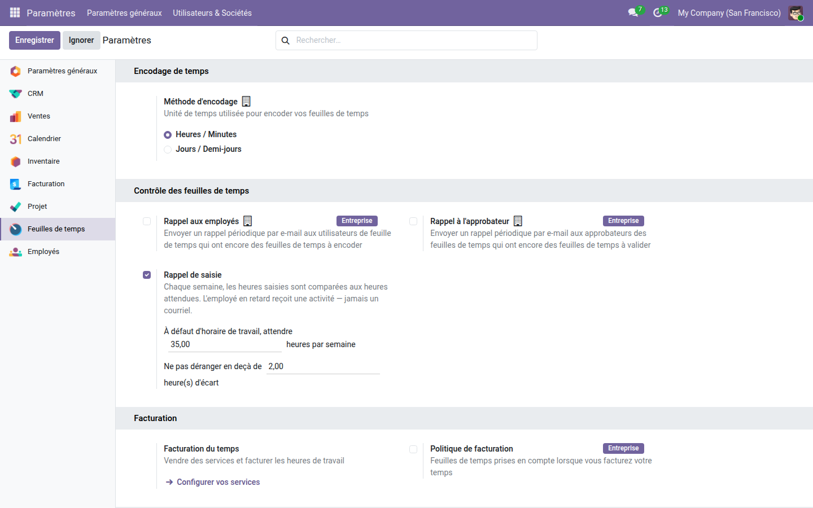

Le tableau des retards de saisie, semaine par semaine, et le rappel qui va avec.
Odoo Community ne rappelle rien : les deux cases de rappel des feuilles de temps sont réservées à l'édition Entreprise. Une feuille vide le reste, et le chef de projet s'en aperçoit à la facturation, quand plus personne ne se souvient de ce qu'il a fait trois semaines plus tôt.
Attendu, saisi, manquant, pour chaque employé et chaque semaine, avec les totaux. La première ligne attend quarante heures et non trente-huit : c'est l'horaire de cette personne, pas une moyenne d'entreprise.

Juste sous les deux rappels du cœur marqués « Entreprise », qui en Community ne déclenchent rien. Les heures attendues par défaut et la tolérance se règlent au même endroit.

Récupérer les heures est un début ; les planifier et les facturer en est la suite. La gamme OdooSkills couvre la planification des ressources, les plannings en diagramme de Gantt pour les projets et la production, et le cloisonnement des projets entre équipes. Catalogue complet : apps.odooskills.com.
Licence LGPL-3 — compatible Odoo 19.0 Community et Enterprise. Support : support@odooskills.com.